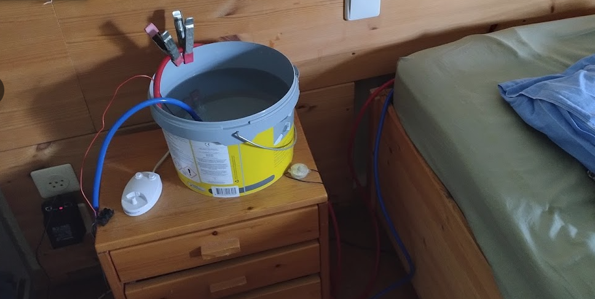

Ervaringen
Adam DavenPort heeft een uitgebreide test gedaan, www.youtube.com/watch?v=WE0hyo6TzMk&t=1490s
Uit zijn onderzoek kunnen een paar conclusies worden getrokken:
- Veel systemen die op de markt worden aangeboden vertellen een veel mooier verhaal dan de werkelijkheid is
- Veel systemen zijn slechts kort op de markt, om vervolgens onder een andere naam/merk opnieuw op de markt te komen
- Lucht bij de voeten ingeblazen is niet prettig voor koeling, maar wel heel prettig voor verwarming
- De meeste systemen werken op basis van adiabatische expansie (verdamping), hetgeen misschien wel een koel matras oplevert, maar zelfs extra warmte en extra vocht produceert in de slaapkamer.
- De meeste van deze systemen produceren, zeker voor een slaapkamer, een behoorlijke hoeveelheid geluid.
- De koeling moet gedurende de nacht steeds milder worden, immers het lichaam zal steeds minder warmte produceren. Zou de koeling blijven op het niveau dat bij het inslapen prettig is, dan wordt je midden in de nacht rillend van de kou wakker.
- Het DIY systeem is by far het beste en goedkoopste systeem
Het DIY systeem bestaat uit een bak gevuld met (koud) water, een watermatras, een kleine aquariumpomp en een USB adapter.
Dit is het beste systeem en wel om de volgende redenen
- Het heeft van nature het juiste temperatuurverloop over de nacht
- Het systeem is volledig geluidsloos
- Het systeem verbruikt zeer weinig energie, het vermogen ligt op 1 Watt
- Het systeem kost ongeveer €50 - €70

Is besteld, nog niet getest
werkt vermoedelijk op basis van adiabatische verdamping
afhankelijk van benodigde hoeveelheid water eventueel grondwater gebruiken